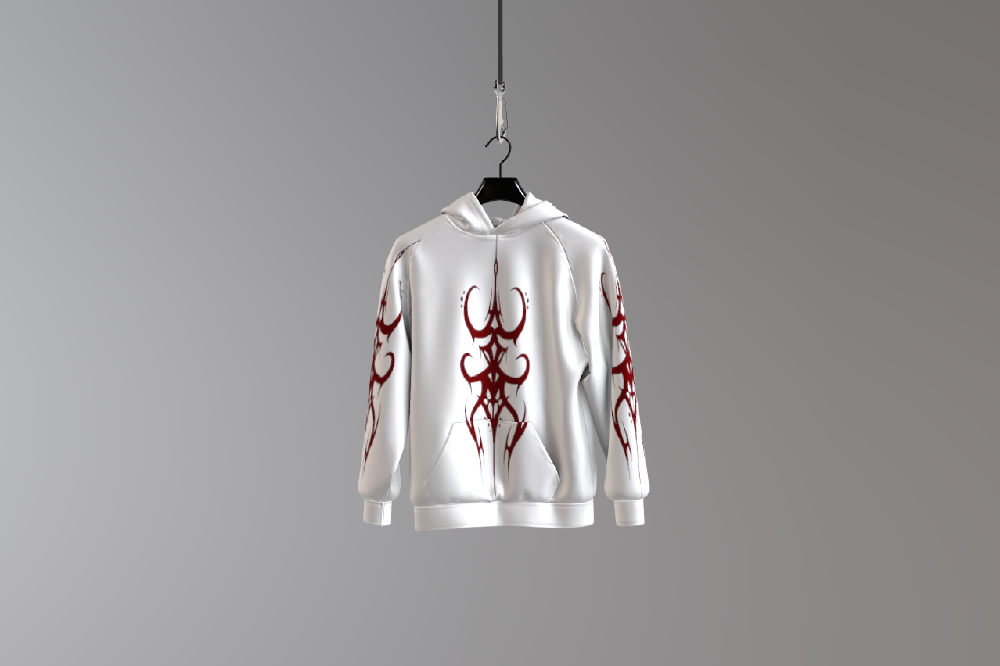
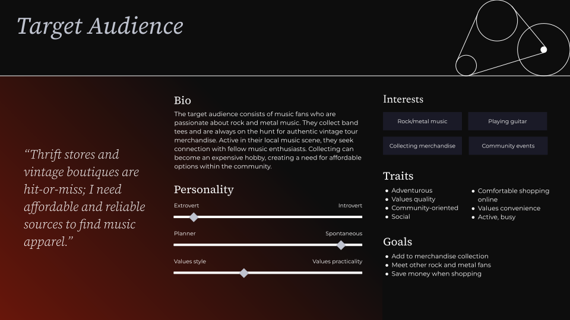
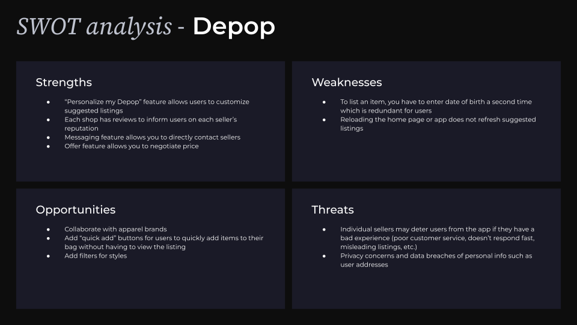
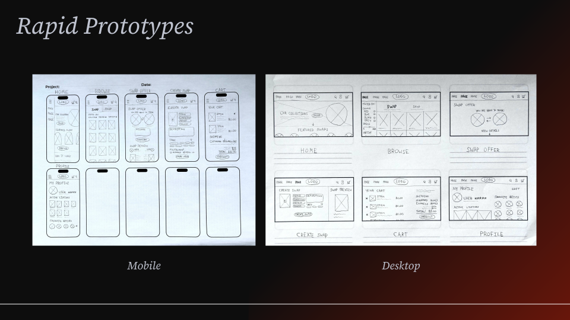
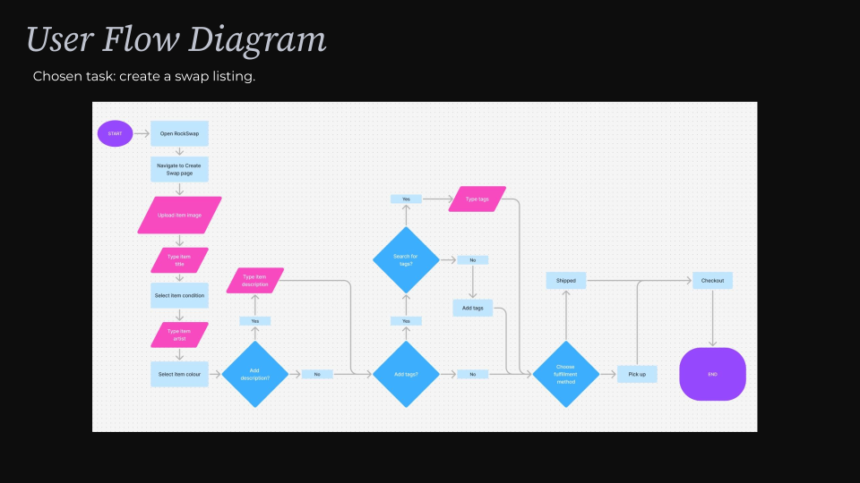
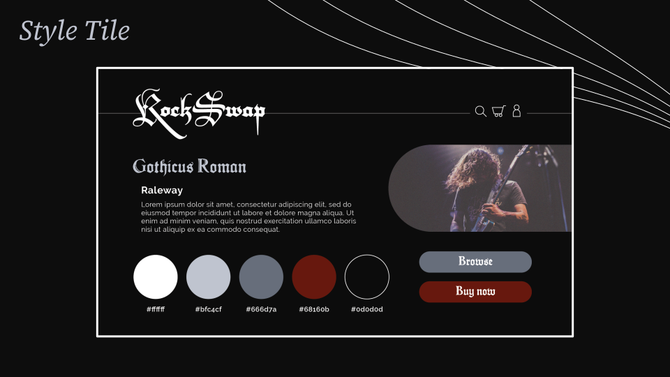
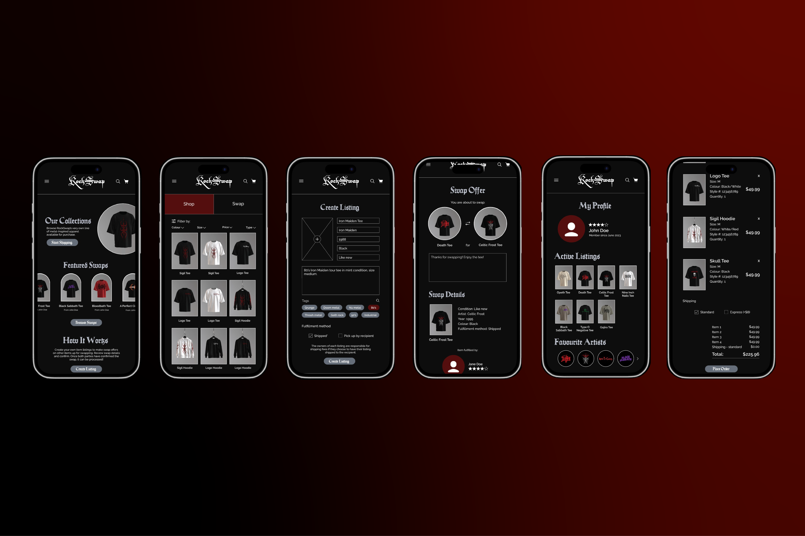

RockSwap: Retail App Design
Role
- UX Researcher
- UI Designer
- UX Designer
- Brand Designer
Project Type
- UI/UX Design
Tools Used
- Figma
- Adobe Illustrator
RockSwap is a mobile retail app for the rock and metal music community, offering both purchasing and trading of apparel. The problems this app aims to solve are the inaccessibility of authentic merchandise (due to costs, limited online options, and an abundance of knockoff items) and the social barrier to new fans of the rock and metal music community.
While primarily a UI/UX project, brand design was first required to create a cohesive sense of the brand which exists within the app, starting with logo design, colour palette, typography, and graphical elements. From the brand image I designed, I created product mockups to later populate the product catalog page. My approach to begin creating the app was to put myself in the target audience's shoes by using competitor apps and then performing a competitive analysis. This unveiled proof of the hypothesized problem, confirming the need for the app.
I then conducted user interviews to hear the target audience's perspective directly. This helped to create the user persona whose main pain points are a busy schedule, tight budget, and opposition to fast fashion. Low-fidelity sketches informed the interface structure, user flow diagrams informed the user experience, and the style tile informed visual identity. After creating a low-fidelity prototype in Figma, conducting user testing, and iterating, a high-fidelity prototype of six app pages was finalized. The result was a mobile app with a clear system to both buy and trade apparel online, an uncommon feature in retail apps.


The target audience consists of music fans who are passionate about rock and metal music. They collect band tees and are always on the hunt for authentic vintage tour merchandise. Active in their local music scene, they seek connection with fellow music enthusiasts. Collecting can become an expensive hobby, creating a need for affordable options within the community.

Strengths: “Personalize my Depop” feature allows users to customize suggested listings, each shop has reviews to inform users on each seller's reputation, messaging feature allows you to directly contact sellers, offer feature allows you to negotiate price. Weaknesses: To list an item, you have to enter date of birth a second time which is redundant for users, reloading the home page or app does not refresh suggested listings. Opportunities: Collaborate with apparel brands, add “quick add” buttons for users to quickly add items to their bag without having to view the listing, add filters for styles. Threats: Individual sellers may deter users from the app if they have a bad experience, privacy concerns and data breaches of personal info such as user addresses.




You May Like


I don't bite.
Feel free to reach out for any inquiries or just to chat (I'd love to exchange music recs).
Let's connect!
estrellaflagg.design@gmail.comEstrella Flagg ©2026